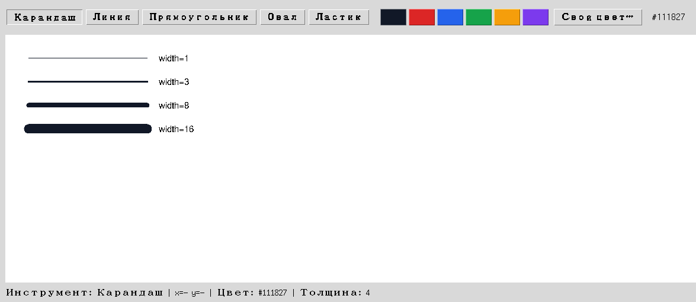

Глава 18 · Инструменты рисования
Толщина кисти
Число в коде и толщина линии на экране — покажем разницу вживую, а не только опишем.
Толщина в коде — и толщина на экране
Четыре линии одного цвета, нарисованные с разной толщиной — разница видна сразу, без необходимости представлять её по числу:

tolschina_kisti.py
self.width_scale = tk.Scale(
toolbar, from_=1, to=20, orient="horizontal", command=self.set_width,
)
self.width_scale.set(4)
def set_width(self, value):
self.state.width = int(value)command у Scale получает строку, а не Event
Как и в разделе 18.6, обработчик
Scale получает готовое значение ползунка напрямую строкой — не объект Event, как у .bind(). Отсюда явный int(value).Толщина хранится в DrawingState, а не только в самом Scale
self.state.width — источник истины, который читают on_press/on_drag. tk.Scale — просто удобный виджет для его изменения, а не хранилище само по себе: та же логика «виджет отображает состояние, а не является им», что и в главе 17.Практика: ползунок толщины кисти
Модуль tkinter открывает нативное окно Python — выполните локально в VS Code, PyCharm или Jupyter
Практика выполняется локально